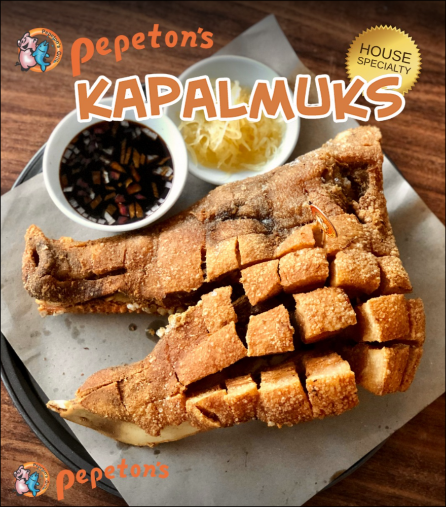

The Legendary Kapalmuks
Blistered, ultra-crispy skin. Succulent tender meat. Spiced native vinegar. There is only one Kapalmuks, and it lives at Pepeton's.

What is Kapalmuks?
Kapalmuks is a culinary creation unique to Pepeton's Grill. The name is a humorous play on the Filipino slang "kapal muks" (thick-faced), literally referencing the cut of meat used: a whole pork face (pig's head). Prepared through a rigorous, multi-stage cooking process, it elevates a humble cut of meat into a luxury dining experience.
The Preparation Process
Making Kapalmuks requires expertise and patience. We do not take shortcuts:
- 1. Curing & Boiling: The cut is cleaned thoroughly, rubbed with a custom blend of local herbs and sea salts, and slow-boiled for hours until the meat becomes tender.
- 2. Dehydrating & Drying: The boiled meat is hung to dry and dehydrate. This step removes moisture from the skin, ensuring it will puff properly during frying.
- 3. High-Heat Flash Frying: The dried pork face is flash-fried in high-temperature oil. The moisture-free skin instantly bubbles up and blisters into an incredibly crispy crunch, while the meat seals in its juices.
- 4. Carving & Serving: The finished dish is carved into bite-sized chunks, arranged on a rustic wooden platter, and served immediately alongside onions, calamansi, and our homemade spiced native vinegar.
The Dipping Sauce is the Key
While the texture of the pork skin is the main attraction, the flavor is elevated by our custom spiced vinegar. Brewed from local sugar-cane, it is infused with bird's eye chilies (siling labuyo), red onions, garlic, and fresh ground black pepper. The sharp acidity cuts through the richness of the pork, creating a perfect balance of crispy, savory, sour, and spicy notes in every single bite.
"My friends and I went here for our mini reunion. Their food was excellent and were reasonably priced. We also had take out and their staff were all professionals."
"We ordered a box of Kapalmuks for my dad's birthday party and it was a massive hit! It stayed incredibly crispy even after delivery."
"Hands down the best crispy pig's face in Quezon City. The skin has a perfect bubbly crunch, and pairing it with cold beer is heaven."